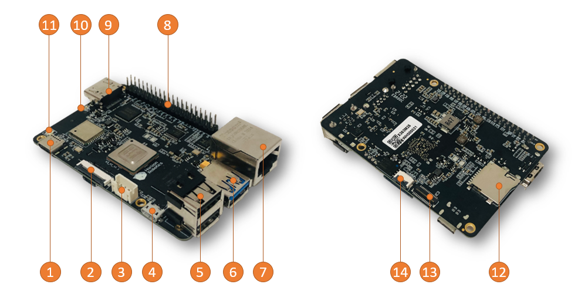
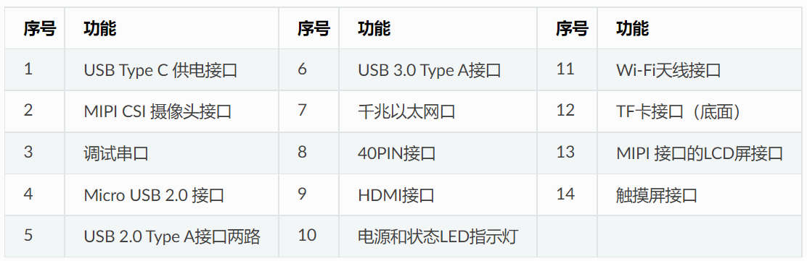
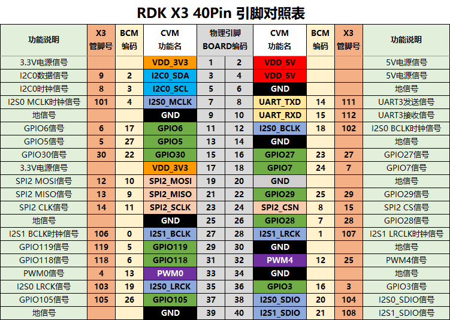

接口说明
机器人控制器

RDK X5
D-Robotics RDKTM X5 搭载Sunrise 5 智能计算芯片，可提供高达10 Tops的算力，是一款面向智能计算与机器人应用的全能开发套件，接口丰富，极致易用，支持Transfomer、RWKV、Occupancy、Stereo Perception 等多种复杂模型和最新算法，加速智能化应用快速落地。

板卡参数
| RDK X5 | |
|---|---|
| CPU | 八核 Cortex® A55 |
| BPU | 10TOPS |
| GPU | 32 GFlops |
| 内存 | 4GB/8GB内存 |
| 存储 | NA, supports external Micro SD card Peripheral |
| Sensor接口 | 2x4-lane MIPI CSI |
| 视频编码 | 1x4K60 (H.265/H.264) |
| 音频 | 1x3.5mm耳机孔, 支持输出/输入 |
| 显示接口 | 1xHDMI Type-A, 最高支持1080p60 1x MIPI DSI 4 Lane |
| USB Host | 4x USB 3.0 HOST (TYPE A) 1xUSB 2.0 Device (TYPE C) |
| USB Device | 1x微型接口 (Micro USB) |
| 网络接口 | 1xRJ45千兆网口, 支持PoE供电 1x双频Wi-Fi 6 支持5.4 |
| CAN接口 | 1x CAN F |
| IO接口 | 28 GPIOs (最大可扩展支持5xUART, 8xPWM, 3xI2C, 2xSPI, 1xI2S) |
| 电源输入 | 5V/5A |
| 系统支持 | RDK OS V3.X (Ubuntu 22.04) |
| 开发环境 | RDK Studio, NodeHub |
| 功能支持 | LLM, 2D/3D Detection, Stereo Depth, Stereo Occupancy, Image Classification etc. SLAM, VSLAM, VIO, Navigation, Language interaction, Grasping etc. |
板载接口

板卡尺寸

RDK X3（旭日X3派）
RDK X3是一款面向生态开发者的机器人开发板，接口兼容树莓派，具有5Tops的端侧推理算力，以及4核ARM A53的处理能力。

板卡参数
| RDK X3 | |
|---|---|
| CPU | Quad-core ARM® Cortex® A53@1.5G |
| BPU | Dual-core Bernoulli Arch, ~5Tops |
| 内存 | 2GB/4GB LPDDR4 RAM |
| 存储 | 16G/32G/64G eMMC or Micro SD |
| 多媒体 | H.265 (HEVC) Encoding and Decoding Main profile, L5.1 4K@60fps H.264 Encoding and Decoding Baseline/Main/High profiles, L5.1 4k@60fps. JPEG Encoding and Decoding 16Mpixels CBR, VBR, AVBR, FixQp and QpMap bitrate control |
| Sensor接口 | MIPI CSI 2lane x 2 |
| USB Host | USB Type-A 3.0 x1USB Type-A 2.0 x2 |
| USB Device | Micro USB 2.0 x1 |
| Debug串口 | 1 x UART，Debug串口 |
| 显示接口 | 1 x HDMI 1.4 (up to 1080p60 ) |
| 无线网络接口 | Wi-Fi/Bluetooth二合一模块Wi-Fi 2.4GHz、Bluetooth 4.1 |
| 有线网络接口 | RJ45接口 |
| 40PIN接口 | GPIO&I2C&UART&SPI&I2S&PWM |
| 电源输入 | 5V 3A |
| 系统支持 | Ubuntu 20.04 |
接口说明
板载接口


扩展接口


Attention
引脚的序号从靠近HDMI板卡内测开始算起，是引脚1，然后依次蛇形计数，分别是1、2、3、4、5，一直到39和40。